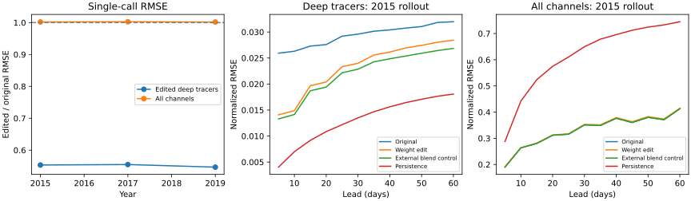
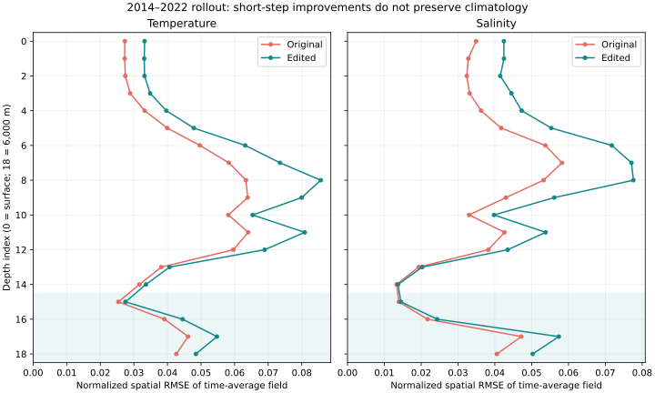

Experiment/results record, November 2026. Not intended to merge or replace the production checkpoint. The frozen edit reduces single-call temperature and salinity error at 3,100–6,000 m by 45.3% on four untouched 2019 windows. Coastal-gradient error in those fields falls 41.4%. Global normalized RMSE rises 0.18%, and the largest individual channel/window/lead regression is 5.2%. The subsequent standard 2014–2022 Torch rollout worsens normalized time-average-field RMSE by 4.7% overall and 16.2% in the edited deep tracers. Do not promote this checkpoint. Visible artifacts remain, and physical consistency is not guaranteed.
The 84-million-parameter ConvNeXt U-Net predicts two future states from two input states. Eight directions in its 280-channel high-resolution skip stream now carry the latest input temperature and salinity at the four deepest levels. Linear projections in existing convolution weights keep the nonlinear branches from reading or overwriting those directions. The decoder combines the remaining learned prediction with this carried state at a 50/50 weight, for both output times. No layers or parameters were added; no gradients, optimizer, or target regression were used.
The directions were chosen from feature moments on four 2015 input windows, with a penalty for disturbing decoder tracer readouts. Prediction targets were used to compare candidate edits, so this is a data-guided experiment. The projections modify about 4.7% of dense parameter entries; it is a low-rank construction, not a sparse or small-norm edit. Reserving the directions perturbs other predictions, which is why the result differs from simply blending the original model output with persistence.
| Single-call evaluation | Deep-tracer RMSE | Deep coastal-gradient RMSE | Global RMSE |
|---|---|---|---|
| 2015 discovery, four seasons | −44.7% | −41.8% | +0.20% |
| 2017 selection, four seasons | −44.5% | −41.4% | +0.27% |
| 2019 final test, four seasons | −45.3% | −41.4% | +0.18% |
Each window evaluates 5- and 10-day leads. Spatial errors use wet-cell area weights, normalized by the original per-channel standard deviations. Summary RMSE is the square root of the mean squared channel/window/lead RMSE, with equal channel weighting. Gradients use wet-to-wet neighbors and physical grid spacing, including periodic longitude; no derivative crosses a land mask. “Coastal” means wet cells adjacent to a dry cell at that channel's depth. These are prediction-error diagnostics, not conservation tests.

On one 60-day January 2015 autoregressive rollout, deep-tracer RMSE improves 11.1% at day 60 while global RMSE increases 0.37%. Pure deep-state persistence does better than the edited model. The improvement therefore supports damping spurious changes, not better learned deep-ocean dynamics. This rollout is a discovery diagnostic; it is not an independent rollout test. No multiyear stability claim is made.
Controls included reserving the same directions with zero persistence blend, applying the blend externally to the original model, and expanding edits to shallower depths. The broader edit caused larger regressions. Simple zero-DC spatial decoder edits worsened errors; averaging the two temporal heads helped modestly but left their shared spatial noise. All decoder screening outcomes are retained in decoder_screen.json. Detailed numerical results, controls, window dates, hashes, and limitations are in results.json.
The weight-space programming article motivated constructing an explicit operation in weights and testing it through forward passes. The Samudra 2 paper describes imprinting into deep tracers and remaining variance/spectral shortcomings. That argues for checking physical reference fields and untouched variables, rather than accepting a smoother image as success.
The architecture and preprocessing were reconstructed from run 3o112ot4. The original November 2025 OM4 data and original means/stds were loaded from OSN after the credentials were updated. The full-record heat-flux anomaly climatology reproduces the training convention, including forcing observations from later evaluation years. Training ended in 2013 and validation in 2014; the experiment uses 2015, 2017, and 2019 windows.
The inference-only edited checkpoint is stored locally at
.LOCAL/weight-edit-original/samudra2_onedeg_ema_carry_balanced_l15_0.5.pt (336 MB).
It contains the model state, chosen basis, and edit provenance. Load its model state dictionary into the unchanged v2 architecture.
The exported file was strictly loaded and reproduced the cached test prediction exactly. The original checkpoint's SHA-256 is unchanged.
The large checkpoint and source data are not committed.
Full-resolution before/after increment maps (local workspace only). Maps share a color scale per variable; values beyond the pooled 99th percentile saturate.
uv sync --dev # Place the original checkpoint in the repository root and OSN credentials in alex.env. uv run python -m scripts.onedeg_weight_edit prepare uv run python -m scripts.onedeg_weight_edit baseline --splits discovery selection uv run python -m scripts.onedeg_weight_edit diagnose --splits discovery uv run python -m scripts.onedeg_weight_edit diagnose --splits selection uv run python -m scripts.onedeg_weight_edit screen --splits discovery uv run python -m scripts.onedeg_weight_circuit inspect --splits discovery uv run python -m scripts.onedeg_weight_circuit run --basis balanced --min-level 15 --alpha 0.5 --splits discovery uv run python -m scripts.onedeg_weight_circuit run --basis balanced --min-level 15 --alpha 0 --splits discovery uv run python -m scripts.onedeg_weight_circuit run --basis balanced --min-level 10 --alpha 0.5 --splits discovery uv run python -m scripts.onedeg_weight_circuit run --basis balanced --min-level 15 --alpha 0.5 --splits selection uv run python -m scripts.onedeg_weight_circuit rollout --basis balanced --min-level 15 --alpha 0.5 # The final candidate was frozen before opening these test windows. uv run python -m scripts.onedeg_weight_edit baseline --splits test uv run python -m scripts.onedeg_weight_edit diagnose --splits test uv run python -m scripts.onedeg_weight_circuit run --basis balanced --min-level 15 --alpha 0.5 --splits test uv run python -m scripts.onedeg_weight_circuit export --basis balanced --min-level 15 --alpha 0.5 uv run python -m scripts.onedeg_weight_circuit verify --basis balanced --min-level 15 --alpha 0.5 uv run python -m pytest tests/test_onedeg_weight_edit.py tests/test_onedeg_tracking.py tests/test_viz_core.py -q
Commands default to float32 on Apple MPS; use --device cpu or --device cuda where appropriate.
Output defaults to the ignored .LOCAL/weight-edit-original directory. Export refuses to overwrite an existing artifact.
The CPU/MPS comparison on one original-model window had normalized RMS difference 9.85×10−7.
No synthetic zero-input result was used to claim a physical improvement.
Both native evaluations completed successfully on one H200 each, producing 598 states from 299 two-output model calls. The matched predictions cover October 20, 2014 through December 24, 2022. This interval overlaps earlier experiment windows; it tests long-horizon behavior but is not a new independent temporal holdout.
| Normalized RMSE of time-average fields | Original | Edited | Change |
|---|---|---|---|
| All 77 prognostic channels | 0.12242 | 0.12815 | +4.7% |
| Edited deep temperature/salinity channels | 0.03459 | 0.04021 | +16.2% |
| Temperature, all depths | 0.04337 | 0.05203 | +20.0% |
| Salinity, all depths | 0.03628 | 0.04598 | +26.7% |

These are arithmetic means of per-channel spatial RMSEs of time-average fields, normalized by the original training standard deviations.
They measure long-term bias and differ from the single-call and 60-day metrics above. All channel values are in
torch_eval_results.json. The existing mean_step_20/normalized_rmse/channel_mean
mixes a dimensional derived heat-content field into its average; it is excluded from these comparisons.
The native visualization also reports SST time-average-field MAE rising from 0.2291 to 0.2814 °C (+22.8%), and zonal/depth temperature-section MAE from 0.0872 to 0.0958 °C (+9.9%). Their distinct averaging definitions are recorded in torch_eval_results.json.
W&B: original evaluation,
edited evaluation, and
comparison visualization.
The comparison completed all 18 stages and uploaded 97 figures plus its artifact (106 files). The separate edited-map run completed all five stages and uploaded 11 figures. Both main visualization runs and both evaluations finished successfully in Slurm and W&B. Review found that legacy hard-coded axis limits clip the total-salt figure in the main bundle. Use the corrected total-salt figure, regenerated successfully with automatic limits; all three numerical trend values are unchanged. A native Matplotlib depth-scale replacement fixes a GUI-dependent import in the HPC container; it passes a GUI-blocked smoke check and 42 focused weight-edit, tracking, and visualization tests. Several native spatial stages select only the first model, so a separate
edited-model map run supplies the corresponding edited temperature profiles, SST maps, and salinity maps. Its heat/salt integrals use the native spherical-area fallback because the legacy dataset lacks
areacello; those diagnostics are not conservation proofs.
The Torch setup is in torch_eval.yaml, torch_viz.yaml, and torch_job.sbatch, grouped as
onedeg-weight-edit-20261103. Online W&B is required; the viz wrapper logs progress, figures, and an artifact.
The older half-degree staging copy was removed with authorization after confirming the public replacement is available.
The original one-degree evaluation data is preserved, and all 77 normalization means and standard deviations match the local experiment exactly.
Both checkpoint hashes verified after transfer. Slurm jobs are 21760092 (preparation), 21761165 (original), 21761167 (edited),
21763658 (comparison viz), 21763659 (edited-model maps), and 21765602 (corrected total-salt plot). Current run identifiers, immutable code/container references, and cancelled submissions are recorded in
torch_runs.json.
The native heat-content diagnostic shows upper-ocean warming in OM4, near-flat behavior in the original model, and cooling in the edited model. Depthwise trend values are fitted to deseasonalized heat content in ZJ per five-day sample: upper (0–700 m), middle (700–2,000 m), and deep (2,000–6,000 m). Global heat and salt trends retain both improvements and regressions: the salinity trend changes to the reference sign but has about 2.9 times its magnitude. Heat-content slopes are in ZJ per five-day sample; salt-content slopes are in grams per sample. These use the approximate areas noted above and do not establish closed heat or salt budgets.
Keep the edited checkpoint as a failed long-horizon candidate. First run matched long rollouts of the reservation-only edit, the original model with an external persistence blend, and a deep-state persistence control. Those controls distinguish damage from reserving hidden directions from distortion caused by damping real evolution. Compare time-resolved errors, depth/basin heat and salt drift, coastal increments, and untouched channels. Restore physical cell areas before interpreting integrated budgets.
Use the resulting diagnosis to construct a smaller targeted edit, with explicit limits on untouched-channel error and tendency distortion. Freeze its selection criteria and reserve new initial conditions for final evaluation. Do not increase the blend or expand to shallower levels based only on smoother plots. The original objective—eliminating unphysical single-step behavior—remains unsolved.